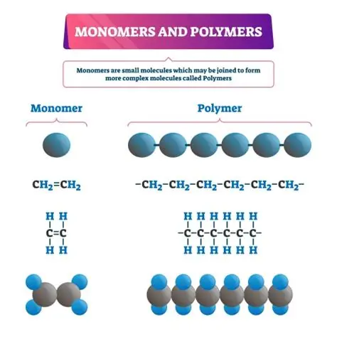

พอลิเมอร์และมอนอเมอร์
มอนอเมอร์ (Monomer) คือ โมเลกุลขนาดเล็กที่สามารถทำปฏิกิริยาเชื่อมต่อกับมอนอเมอร์อื่น ๆ เพื่อสร้างพอลิเมอร์ โดยมอนอเมอร์เปรียบเสมือนหน่วยย่อยหรือหน่วยก่อสร้างของพอลิเมอร์ เมื่อมอนอเมอร์จำนวนมากเชื่อมต่อกันจะเกิดเป็นโมเลกุลขนาดใหญ่ที่มีหน่วยซ้ำเรียกว่า พอลิเมอร์ พอลิเมอร์เกิดจากการนำมอนอเมอร์จำนวนมากมาเชื่อมต่อกันผ่านปฏิกิริยาการเกิดพอลิเมอร์ ตัวอย่างเช่น เอทิลีน (Ethylene) เป็นมอนอเมอร์ที่ใช้สร้างพอลิเอทิลีน (Polyethylene) ซึ่งเป็นพอลิเมอร์ที่ใช้ผลิตถุงพลาสติกและบรรจุภัณฑ์ โดยเอทิลีนมีสูตรเคมี C₂H₄ และพอลิเอทิลีนมีหน่วยซ้ำเป็น –CH₂–CH₂–